О центре «Независимая Экспертиза»
Автономная некоммерческая организация Исследовательский Центр «Независимая Экспертиза» — экспертное учреждение полного цикла. Проводим судебные и досудебные экспертизы, независимые исследования и лабораторные испытания с 2014 года.
Центр — член Торгово-промышленной палаты г. Москвы. Офисы в Москве и Краснодаре, работаем по всей России. Заключения оформляются по 73-ФЗ и принимаются судами всех инстанций.
Эксперты
Соколов В. А.
Морозова Е. И.
Гаврилов П. С.
Титов А. Н.
Белова О. В.
Кузнецов Д. М.
Лицензии, свидетельства и сертификаты
Нажмите на документ, чтобы увеличить.
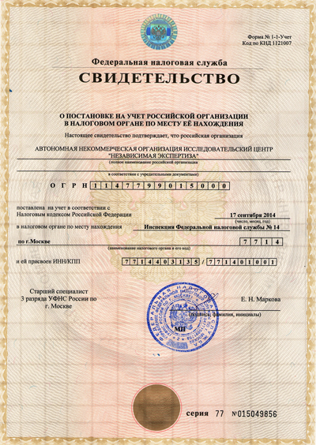
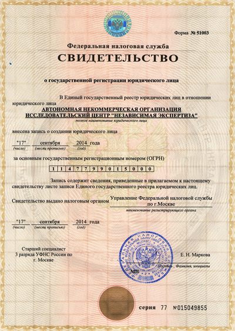
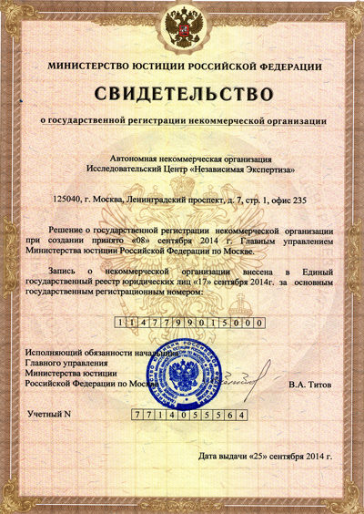
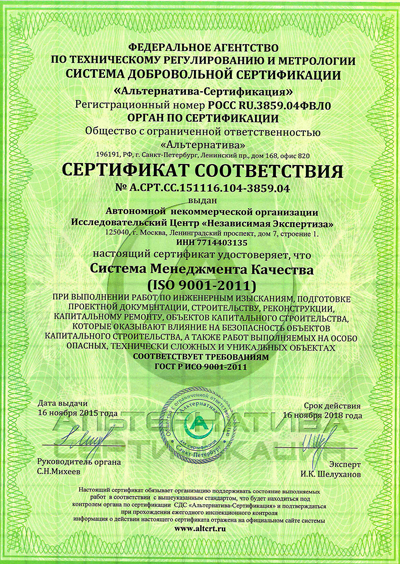
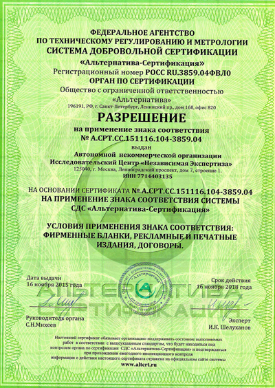
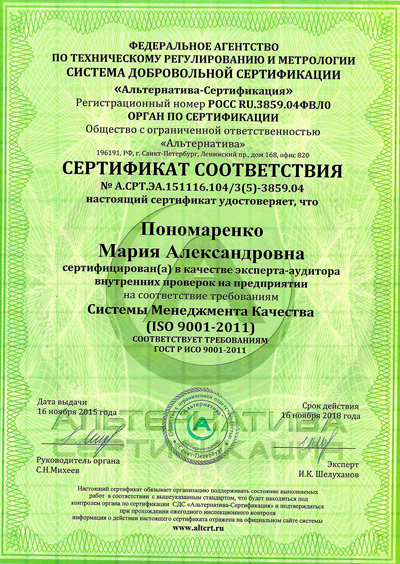
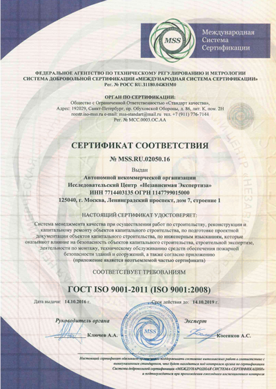
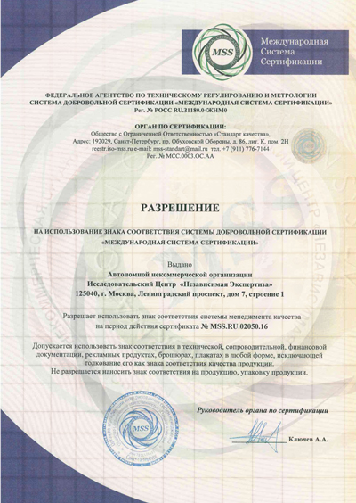
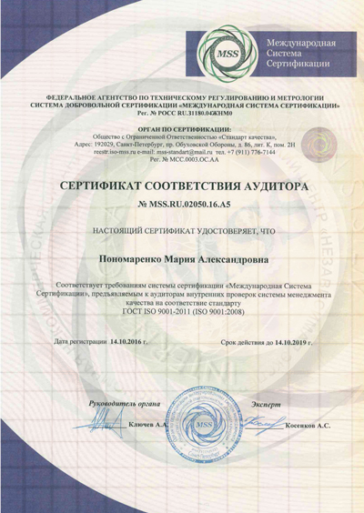
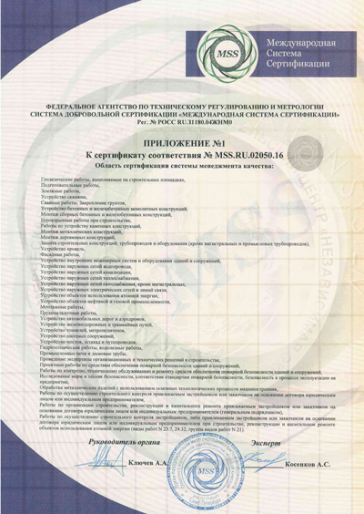
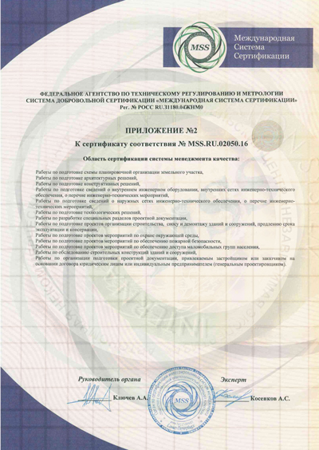
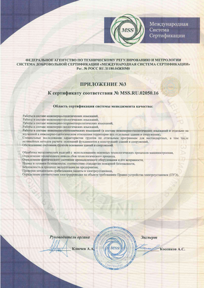
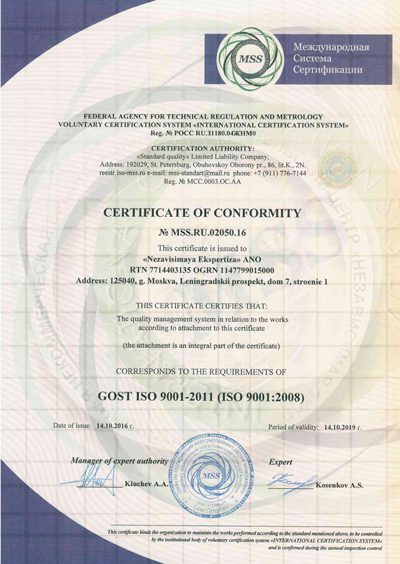
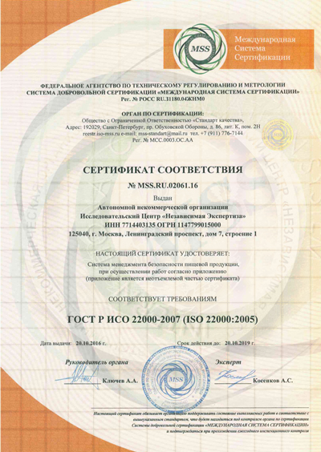
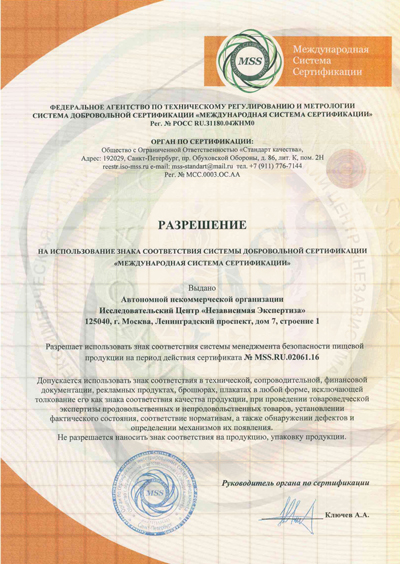
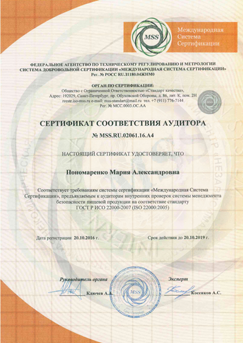
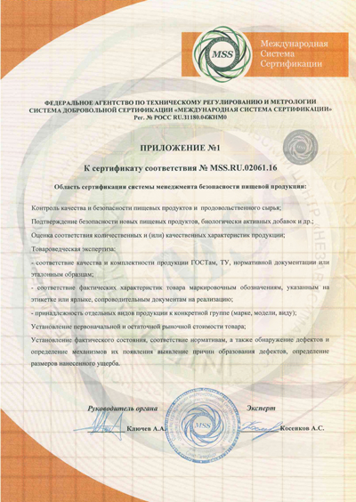
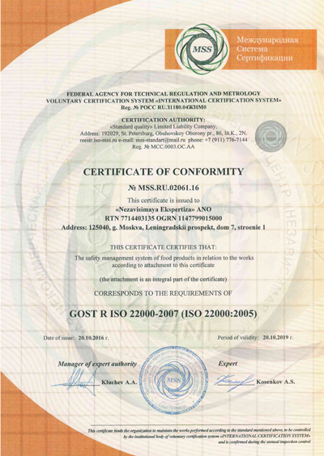
Отзывы и рекомендации
«Заключение по строительному спору выдержало проверку в апелляции. Эксперт чётко ответил на вопросы суда.»
— Адвокатское бюро, Москва
«Оперативно провели экспертизу объёмов работ, помогли обосновать позицию по контракту.»
— Юрдепартамент застройщика
«Почерковедческая экспертиза помогла оспорить поддельную расписку. Спасибо за подробное заключение.»
— Частный клиент
Частые вопросы
Какие документы подтверждают квалификацию ваших экспертов?
Нужна ли лицензия, чтобы проводить судебную экспертизу?
Есть ли у экспертов аттестация и сертификаты соответствия?
Где вы находитесь, офис только в Москве?
Сколько лет вы на рынке и большой ли опыт?
Как суд проверяет, что эксперт достаточно компетентен?
Нужна экспертиза или консультация?
Опишите задачу — эксперт перезвонит, уточнит вопросы и оценит стоимость и срок.
Оставьте заявку — перезвоним
Эксперт свяжется в рабочее время, ответит на вопросы и оценит стоимость. Без спама и звонков роботов.